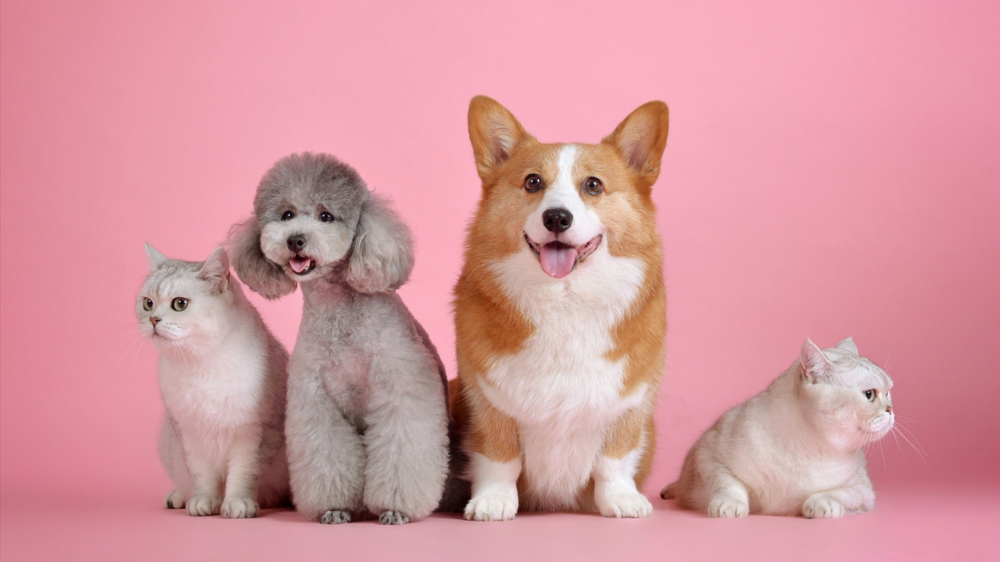
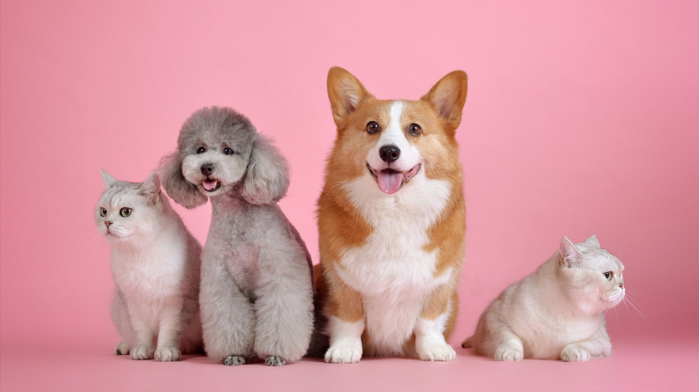

HOME


Health Tips
Food Tips

Explore a wealth of information curated by seasoned veterinarians and
pet care specialists. From preventive care to addressing common health
concerns, our tips cover a spectrum of topics, helping you become the
best pet parent possible.Your pet's well-being is our top priority. Dive
into our "Health Tips" section and embark on a journey towards a
healthier, happier life for your beloved pets.
Explore a world of insights curated by our team of nutritionists and pet
care specialists. From choosing the right kibble to preparing wholesome
homemade meals, our food tips cover a range of topics to ensure your pet
receives the nourishment they deserve.Discover guidelines tailored to
different breeds and sizes, helping you navigate the vast landscape of
pet nutrition with confidence.

 FREQUENTLY ASKED QUESTIONS?
How to Manage our Pets?
What is the Life Span of my Pet?
What topics are covered in the Health Tips?
What information can I find in the Pet Care section?
FREQUENTLY ASKED QUESTIONS?
How to Manage our Pets?
What is the Life Span of my Pet?
What topics are covered in the Health Tips?
What information can I find in the Pet Care section?


 PETS GALLERY
PETS GALLERY


DOG BREEDS
Golden Retreiver is a large, impressive and luxuriantly coated cat breed.
Underneath an impressive silky, dense, and semi-long to long haired
coat, there is a long, muscular cat with a broad chest, short neck, and
sturdy legs. The tail is long and bushy, and the coat will, in the adult
cat, form fluffy trousers on the hind-legs and a majestic ruff around
the neck and throat.
CAT BREEDS
More
The Ragdoll is a large, impressive and luxuriantly coated cat breed.
Underneath an impressive silky, dense, and semi-long to long haired
coat, there is a long, muscular cat with a broad chest, short neck, and
sturdy legs. The tail is long and bushy, and the coat will, in the adult
cat, form fluffy trousers on the hind-legs and a majestic ruff around
the neck and throat.

More
CAT BREEDS
The Ragdoll is a large, impressive and luxuriantly coated cat breed.
Underneath an impressive silky, dense, and semi-long to long haired
coat, there is a long, muscular cat with a broad chest, short neck, and
sturdy legs. The tail is long and bushy, and the coat will, in the adult
cat, form fluffy trousers on the hind-legs and a majestic ruff around
the neck and throat.
- Home
- About
- Services
- Works
- Blog
- Contact
Quick Links
Contact us

A small river named Duden flows by their place and supplies it with the
necessary regelialia.
 ABOUT
BREED
SERVICES

SUBSCRIPTION
ABOUT
BREED
SERVICES

SUBSCRIPTION